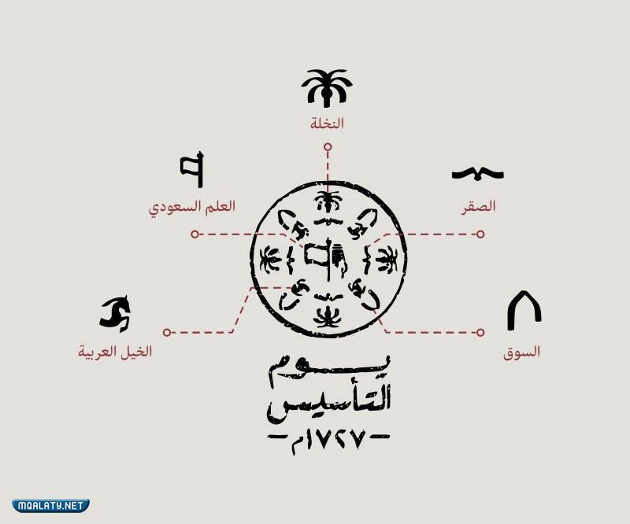

اضغط على السؤال لاستعراض الاجابة
ما هو يوم التأسيس؟
يوم التأسيس صدر الأمر الملكي الكريم من خادم الحرمين الشريفين الملك سلمان بن عبدالعزيز آل سعود بأن يكون يوم 22 فبراير يوماً للتأسيس وهو اليوم الذي يرمز إلى العمق التاريخي والحضاري والثقافي للمملكة العربية السعودية عندما أسس الإمام محمد بن سعود الدولة السعودية الأولى عام 1139هـ / 1727م.
الى ماذا يرمز شعار يوم التأسيس؟

ما هي اهداف يوم التأسيس؟
- ١- الاعتزاز بالجذور الراسخة للدولة السعودية
- ٢- الاعتزاز بالارتباط الوثيق بين المواطنين وقادتهم
- ٣- الاعتزاز بما أرسته الدولة السعودية من الوحدة والاستقرار والأمن
- ٤- الاعتزاز بصمود الدولة السعودية الأولى والدفاع عنها أمام الأعداء
- ٥- الاعتزاز باستمرار الدولة السعودية واستعادتها لقوة جذورها وقادتها